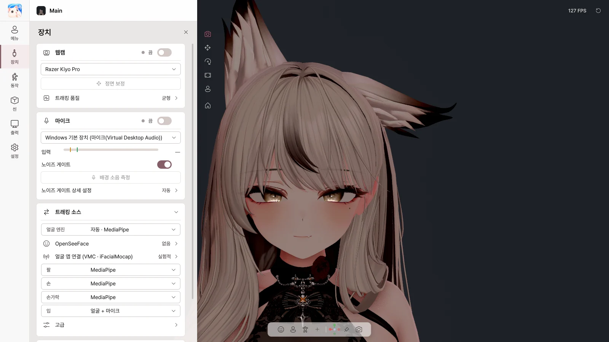

6. 장치#
장치 페이지에서 무엇으로 아바타를 움직일지 정합니다. 여기서 정한 장치는 모든 아바타에 공통입니다.

웹캠#
| 항목 | 하는 일 |
|---|---|
| 웹캠 스위치 | 웹캠 트래킹 켜기 / 끄기 |
| 카메라 목록 | 사용할 카메라 고르기 |
| 정면 보정 | 지금 얼굴 방향을 정면으로 맞추기 |
| 트래킹 품질 | 부드럽게 / 균형 / 절약 — 게임과 함께 쓸 때는 균형이나 절약 |
카메라에 문제가 있으면 이 카드에 이유가 표시됩니다 (연결 안 됨, 화면이 어두움, 다른 앱이 사용 중 등).
마이크#
| 항목 | 하는 일 |
|---|---|
| 마이크 스위치 | 마이크(립싱크) 켜기 / 끄기 |
| 마이크 목록 | 사용할 마이크 고르기 |
| 입력 미터 | 지금 들어오는 소리 크기 |
| 노이즈 게이트 | 배경 소음으로는 입이 움직이지 않게 |
| 배경 소음 측정 | 조용히 있는 동안 소음을 재서 게이트를 자동으로 맞추기 |
| 노이즈 게이트 상세 설정 | 자동 / 수동, 열림·닫힘 기준, 반응 시간 |
트래킹 소스#
부위마다 무엇으로 움직일지 고릅니다.
| 항목 | 선택 |
|---|---|
| 얼굴 엔진 | 자동 / MediaPipe / OpenSeeFace |
| 팔 · 손 · 손가락 | MediaPipe / Ultraleap / 끔 |
| 입 | 얼굴 + 마이크 / 얼굴 / 마이크 / 끔 |
| 고급 › 얼굴 표정 · 머리 · 눈 | 얼굴 / 끔 |
OpenSeeFace#
얼굴만 추적하는 다른 엔진입니다. Avatar Live에 포함되지 않으므로 직접 받아서 설치 폴더 밖에 두고, OpenSeeFace 폴더에서 지정합니다.
얼굴 앱 연결 (VMC · iFacialMocap)#
웹캠 대신 다른 앱이나 iPhone에서 얼굴을 받습니다.
| 항목 | 하는 일 |
|---|---|
| 소스 | 없음 / VMC / iFacialMocap |
| 스위치 | 받기 시작 |
| 포트 / iPhone 주소 | 연결 정보 |
| 내 네트워크의 기기 허용 | 같은 네트워크의 휴대폰·PC에서 받기 |
| 이 PC의 주소 · 복사 | iFacialMocap 앱에 입력할 주소 |
| 정면 보정 | 지금 머리 방향을 정면으로 |
Ultraleap 손 트래킹#
Leap Motion / Ultraleap 장치로 팔·손·손가락을 추적합니다. Ultraleap 소프트웨어를 설치하고 장치를 연결한 뒤, 트래킹 소스에서 Ultraleap을 고르세요.
| 항목 | 하는 일 |
|---|---|
| 스위치 · 상태 | 켜기, 장치와 손이 보이는지 |
| 보정 (장치 위치) | 장치 위치·방향, 손 크기, 스무딩 |
| 보정 | 손을 키보드 위에 두고 누르면 그 자리를 키보드 위치로 |
외부 트래킹 (OSC · VMC)#
이 PC의 다른 앱과 연결합니다. 기본은 꺼져 있습니다.
| 항목 | 하는 일 |
|---|---|
| OSC 입력 (아바타 파라미터) | VRChat용 OSC 도구로 아바타 파라미터 바꾸기 |
| VMC 입력 (다른 앱의 몸·뼈) | 다른 모션 앱에서 몸을 받기, 받을 부위 고르기 |
| 송신 측 쉐이프키를 아바타에 그대로 쓰기 | 받은 표정을 그대로 적용 |
Ultraleap, OSC·VMC는 정상 동작을 예상하지만, 해당 장치·앱이 개발자 환경에서 아직 테스트되지 않은 실험적 기능입니다.
VMC 출력은 9장에 있습니다.